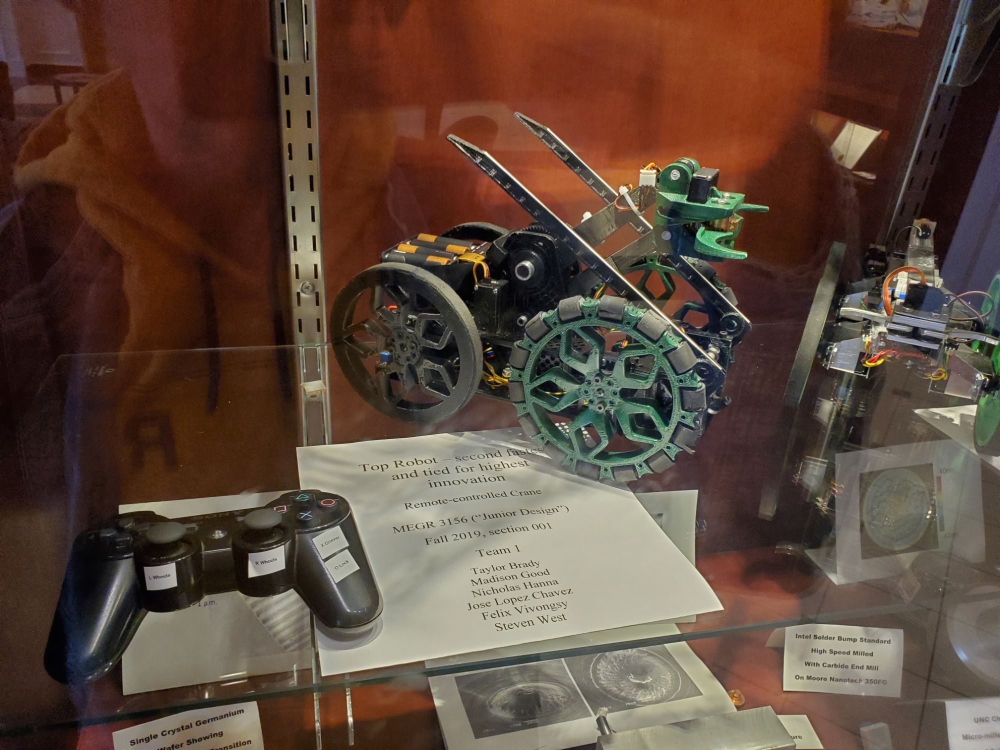
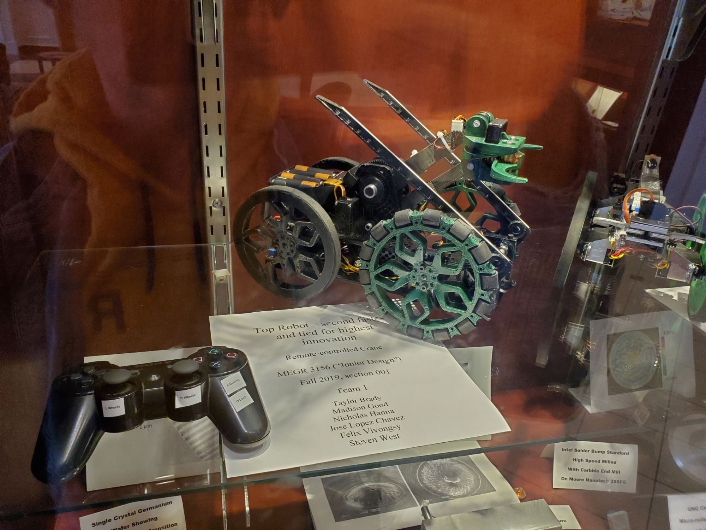

Yellowstone National Park,
Norris Geyser Basin,
Wyoming
Hi there! Welcome to my Engineering Portfolio! I'm Felix.
I'm a passionate engineer with a background in Mechanical Engineering. My journey began as a child, when I first started building with Legos. This early fascination with creating things sparked a lifelong dedication to designing and building products that have a meaningful impact—whether by helping others or providing entertainment.
Throughout my career, I've had the opportunity to work on full-stack software applications, challenge industry design standards, and develop manufacturing equipment for some of the most innovative automotive products. These experiences have provided me with a strong foundation in mechanical design, control logic, troubleshooting, communication, and manufacturing.
I pride myself on my ability to understand business needs at a strategic level and collaborate effectively with cross-functional teams to overcome challenging objectives. Whether I'm troubleshooting equipment, designing a component, or writing documentation, I always strive to understand the value of each task and approach my work with a strong sense of ownership.
Outside of work, I enjoy exploring, diving into personal projects, learning about financial markets, going to the gym and eating food. This helps me stay creative and balanced, bringing fresh ideas into my engineering projects.
Thank you for visiting my portfolio! I'm excited to share my work with you, and I look forward to connecting with others who are passionate about engineering. Please feel free to reach out if you'd like to discuss my projects, collaborate, or just chat about all things engineering.


 
